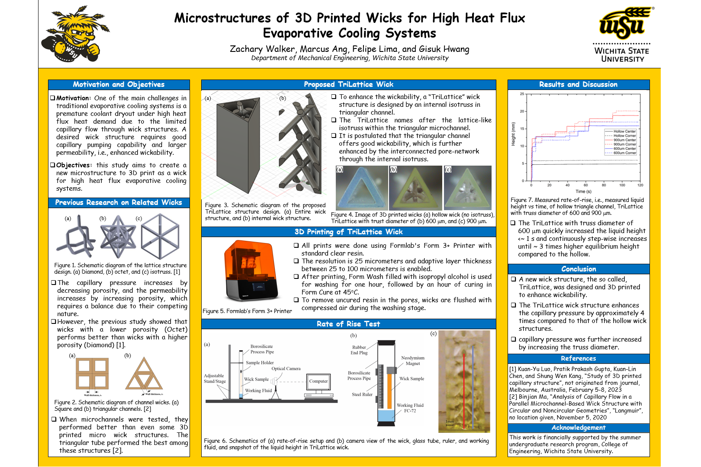
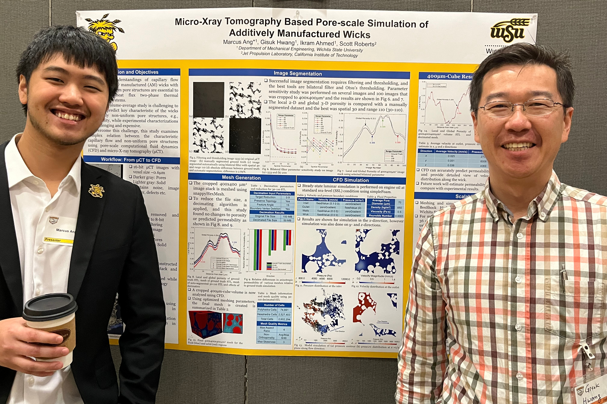

Presentations and Publications
Here is a collection of my publications. A pdf copy of my slides from seminars and poster presentations is uploaded to my GitHub. Conference and journal articles are linked to the publisher site, but a copy can be sent upon request.
Thesis Defense: Porous Trailing Edge for Airfoil and Fan Noise Reduction at Low-Speed Stall Conditions

This numerical study investigates an airfoil profile from an electronic cooling fan using two trailing edges: a solid and a porous trailing edge that is applied from the half chord. A wall-resolving, pore-scale LES predicts the flow at a low Reynolds number of 15,000 and a high angle of attack of 25˚. Then, the Ffowcs-Williams and Hawkings analogy is used to obtain the farfield noise. The results show that the porous trailing edge reduces noise by up to 2 dB at a high angle of attack, and five flow field effects contribute to noise reduction.
Poster Presentation: Porous Trailing Edge for Airfoil and Fan Noise Reduction at Low-Speed Stall Conditions

Presented at the 20th Annual Symposium on Graduate Research and Scholarly Projects (GRASP).
In this experimental study, fan blades for an electronic cooling fan were designed with a porous trailing edge from the half-chord. The porous media had gyroid unit cells with an average pore diameter of 1mm and 1.25mm. The rotors were 3D-printed using resin, and acoustic measurements were conducted in a semi-anechoic chamber. The study finds that compared to the solid baseline blades, there is a 4.3% overall noise reduction, especially at low to mid frequencies. However, at high frequencies, the increased surface roughness produces a slight increase in noise.
Poster Presentation: Review of Direct Air Capture (DAC) Technology and Challenges to Achieve Paris Agreement Objectives
Presented at the 20th Annual Symposium on Graduate Research and Scholarly Projects (GRASP).
The Paris Agreement aims to limit global temperature rise to 2°C above pre-industrial levels, but the global temperature has increased by 1.2°C in 2022. One mitigation strategy is to use DAC to absorb CO2 from the atmosphere. Orca is the largest DAC plant, which has a capture capacity of 4,000 tCO2/year and costs $600/tCO2. To achieve the 20Gt/CO2 objective, 2.4 million Orca-sized plants are needed, requiring 1.4 × 1020 J and costing $20 × 1012 annually. The analysis indicates that scaling up to the required GtCO2/year is currently unfeasible; nonetheless, DAC technologies should continue to develop to ease the transition to renewable energy and for future carbon removal.
Poster Presentation: 3D printed novel wick structures for enhanced capillary flow

Presented at the Undergraduate Research and Creative Activity Forum (URCAF).
This experimental study explores the use of wicks in high heat flux evaporative cooling systems, addressing the issue of premature coolant dryout due to limited capillary flow. Two microstructures for wicks are investigated: a triangular channel with internal iso truss structures and a cubic lattice structure with internal iso truss structures. The samples were 3D-printed with resin, and a rate-of-rise experiment was conducted to measure the capillary rise. The non-uniform pore structures improve the capillary pumping capability without significantly reducing permeability. The triangular channel with iso truss structures improved maximum liquid height by 100% above the baseline structure.
Guest Instructor: Basics of FVM using OpenFOAM with Applications
Presented as a lecture for ME 782 Engineering Applications of Computational Fluid Dynamics and Heat Transfer, Wichita State University.
Dr. Ahmed invited me to provide two hands-on lectures for his graduate CFD course. Some theoretical content, such as discretization, stability, and numerical schemes, was provided, but a large portion of the lecture was hands-on exercises with meshing using snappyHexMesh, solving using simpleFoam and pimpleFoam, and post-processing using ParaView. The students were also introduced to the university's High-Performance Computing (HPC) cluster, and homework assignments were provided to help them practice their Linux skills and better understand the CFD workflow.
Conference Paper: Reduction of Input Features from Machine Learning Datasets for Water Quality Analysis
Presented at the IEEE International Conference on Artificial Intelligence, Control, Data Sciences and Applications (ACDSA).
Traditional water quality testing methods require a high number of distinct tests; however, machine learning can minimize the required number of input features. This study uses a Kaggle dataset with nine features and 2011 data points. The most significant features are first identified using recursive feature elimination with cross-validation (RFECV), permutation importance (PI), and random forest (RF) approaches. Second, the water's potability is predicted using an artificial neural network (ANN) and a support vector machine (SVM). Using the machine learning model, the dataset with five features had 3% more errors compared to the dataset with nine features, yet the reduction in the required test would reduce testing costs by about 65%.
Seminar: Computational Modelling of Surface Tension Driven Flow and Experimental Measurements of Metallic Wicks
Presented as a Graduate Seminar to the Department of Mechanical Engineering, Wichita State University.
In a high heat flux thermal management system, wicking of the working fluid can prevent surface dryness to maintain high heat transfer. However, modeling two-phase systems is challenging, as are experimental measurements at the micro-scale. In this seminar, recent improvements to numerical algorithms for surface-tension driven flow are presented and the accuracies are discussed. Additionally, a new rate-of-rise experimental setup using an infrared camera is presented, which can accurately measure the working fluid height for opaque metallic samples.
Poster Presentation: Micro-Xray tomography based pore-scale simulation of additively manufactured wicks

Presented at the 19th Annual Symposium on Graduate Research and Scholarly Projects (GRASP).
This study presents a CFD methodology using micro-Xray computed tomography (μCT) data to accurately simulate additively manufactured (AM) wicks. To validate the workflow, AM wicks were manufactured using laser powder bed fusion and their porosity, permeability and bubble point radius were measured. 2,000 tomographic images with a voxel size of 0.6 μm were generated. Image segmentation was performed in ImageJ, and this study suggests utilizing a bilateral noise reduction filter and Ostu's method of thresholding. The mesh was generated using snappyHexMesh, and the simulations were conducted in OpenFOAM. The predicted permeability of 1.23×10-12 m2 agrees with the Carman-Kozeny relation and experimental measurements.
Seminar: Meshing and Pore-Scale Simulation of Additively Manufactured Wicks in OpenFOAM
Presented as a Graduate Seminar to the Department of Mechanical Engineering, Wichita State University
Fundamental understandings of capillary flow through additively manufactured (AM) wicks with highly non-uniform pore structures are essential to design high heat flux two-phase thermal management systems. Traditional volume-average study is challenging to accurately predict key characteristics of the wicks, e.g., permeability, while experimental characterizations are challenging and expensive. A micro-Xray computed tomography (μCT) can generate highly detailed volume meshes for accurate prediction of pore-scale heat and mass transfer of wicks using computational fluid dynamics (CFD). This presentation presents an optimal workflow from μCT data to pore-scale simulation using open-source tools.